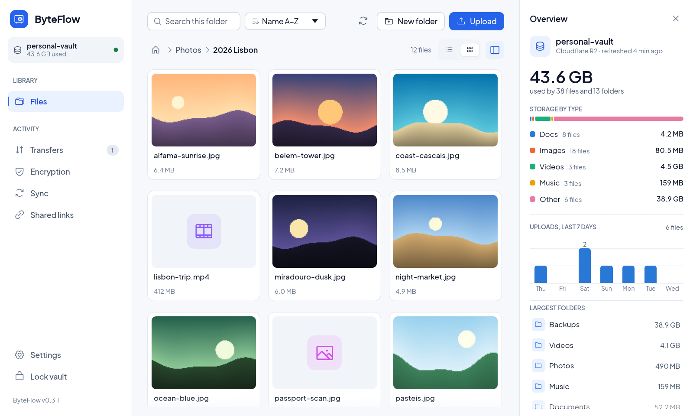
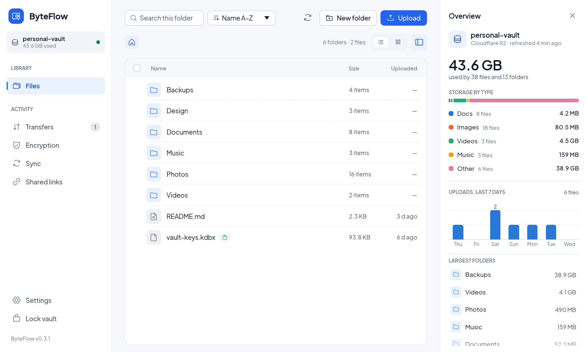
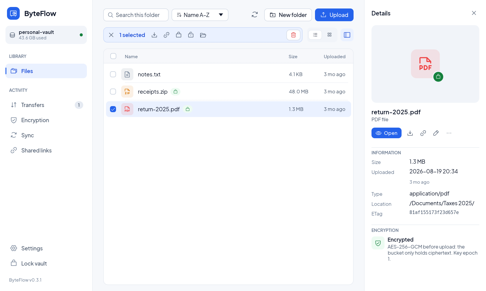
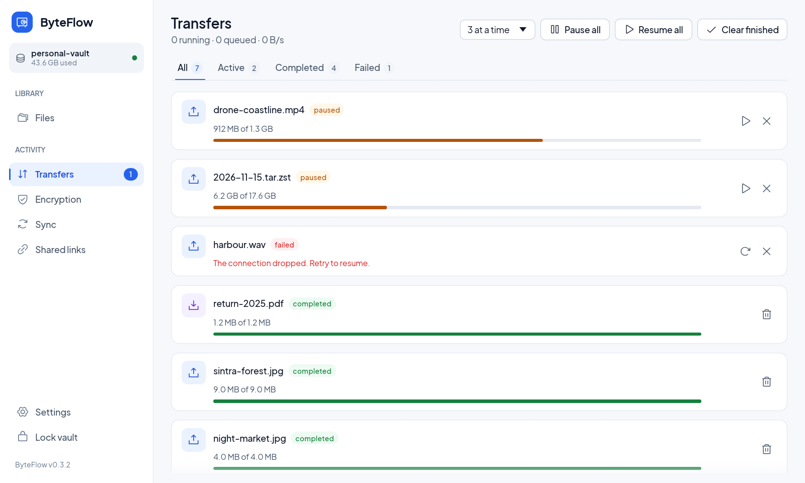
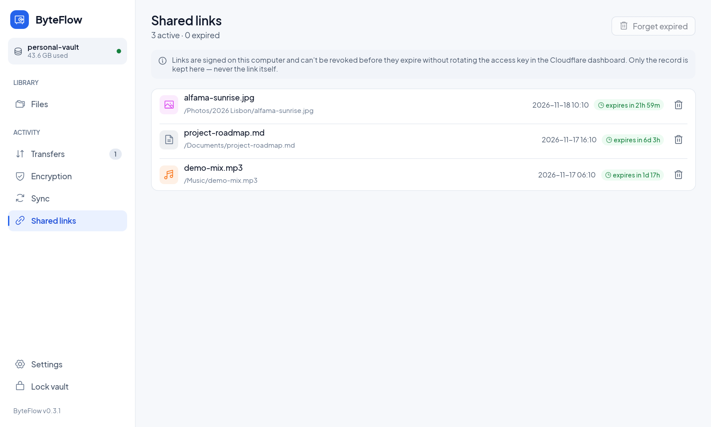
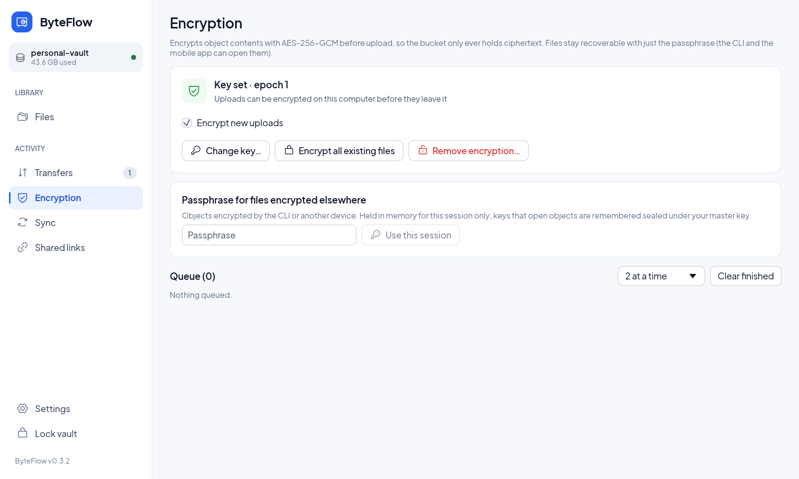
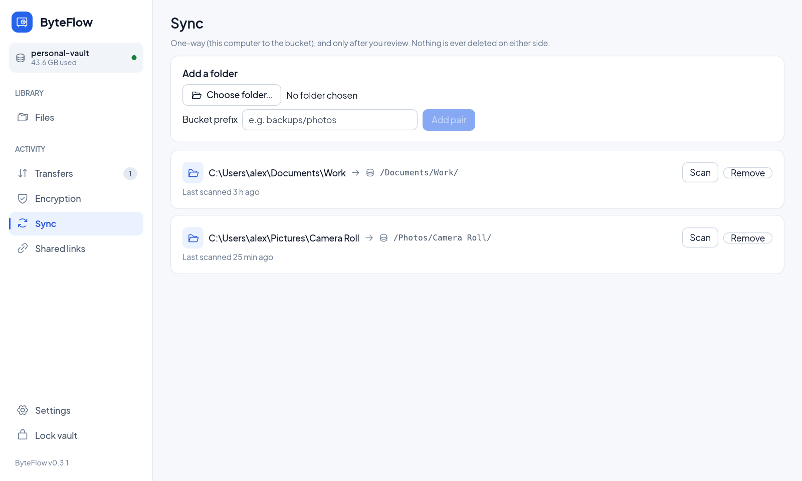
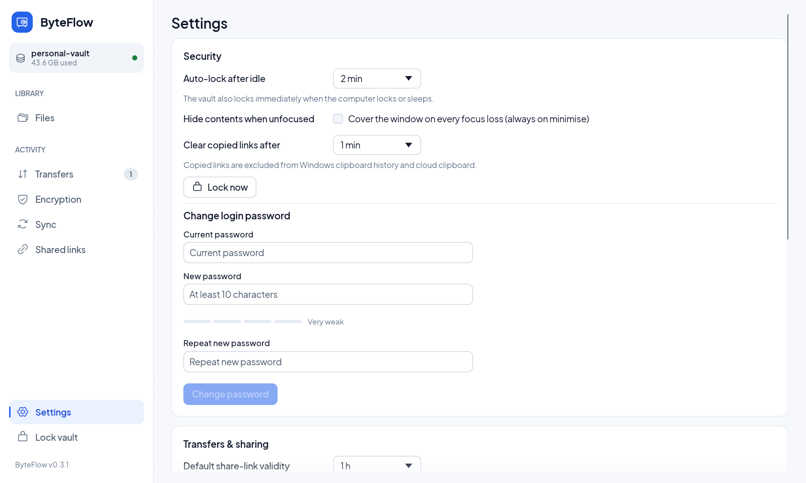

Sealed credentials
Your R2 keys are encrypted under a key derived from your login password with Argon2id, then protected by Windows for your user account only.
ByteFlow turns your own Cloudflare R2 bucket into a private file vault for Windows. Browse, preview, upload and share your files, and encrypt them with AES-256-GCM before they ever leave your computer.

Everything you expect from a desktop file browser, built for object storage and fast on large buckets.
Folders, search, sort, list or grid, and a details panel that shows how your space is used. The listing is cached locally, so moving around is instant, even with thousands of objects.

Turn on encryption and new uploads are encrypted on your computer with AES-256-GCM. You can also encrypt or decrypt files that are already in the bucket. Encrypted files are marked with a lock everywhere.
byteflow-crypto tool decrypts a file with just the passphrase
Large uploads go up in parts, several at a time, and pick up where they stopped after a dropped connection, a pause or a restart. Downloads resume too.

Pair a folder on your computer with a folder in the bucket. ByteFlow shows what's new or changed, and uploads only what you approve. When you need to send something, create a link that expires on its own.

ByteFlow is built for one person and one bucket, and it assumes your laptop can be lost, borrowed or watched.
Your R2 keys are encrypted under a key derived from your login password with Argon2id, then protected by Windows for your user account only.
The vault locks after an idle time you choose, from 30 seconds to 10 minutes, and immediately when you lock Windows or the computer goes to sleep.
A second password that looks like a normal unlock but erases ByteFlow's local data: credentials, keys, caches and thumbnails.
The window is excluded from screenshots, screen recordings, screen sharing and taskbar previews.
The contents are hidden whenever the window is minimised, and optionally every time it loses focus.
Vault data lives in your local profile and never roams to other machines. Previews are deleted when you close them.
All you need is a Cloudflare account. R2 has a free tier and no egress fees.
In the Cloudflare dashboard, create an R2 bucket and an API token with read and write access to it.
A login password to unlock ByteFlow, and a destruction password that erases the vault if you're ever forced to open it.
Paste your account ID, keys and bucket name, test the connection, and your files appear. Set an encryption key whenever you like.



No. There is no ByteFlow server or account. The app connects directly to your own R2 bucket, and your credentials stay on your computer, encrypted.
The app is free to download. Storage is billed by Cloudflare to your own account at their R2 rates, and R2 includes a free tier.
With encryption on, the contents of each file are encrypted with AES-256-GCM on your computer before upload, so Cloudflare only ever stores ciphertext.
File and folder names, sizes and dates are not encrypted: they stay readable so you can browse the bucket. Keep that in mind when you name sensitive files.
Encrypted files can't be recovered without it. Nobody, including us, has a copy or a back door. Keep the passphrase in a password manager.
Yes. Unencrypted files are ordinary objects in your bucket, readable by any S3-compatible tool. Encrypted files can be decrypted with the byteflow-crypto command-line tool and your passphrase, with no vault or account needed.
The installer isn't code-signed yet, so Windows warns about it the first time. Choose "More info", then "Run anyway". You can check the download against its SHA-256 checksum below.
No admin rights are needed: ByteFlow installs for your user by default, and offers an all-users install. Uninstalling removes the program but keeps your vault, so a reinstall picks up where you left off. To erase the vault, use Settings → Danger zone.
Not yet. ByteFlow currently ships for Windows 10 and 11 (64-bit).
Download ByteFlow, connect your R2 bucket, and keep your files encrypted and under your control.
cd240e734c96a6d58d6cde2e15791be1facfe9e48cc774603b55c0c5f3d3bc77